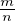
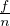
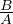
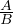

Tõenäosus kirjeldab sündmuse toimumise võimalikkust. Sündmusi tähistatakse
tavaliselt suurte tähtedega. Tõenäosuse kirjeldamiseks seatakse sündmusega
vastavusse arv nullist üheni, mis iseloomustab sündmuse toimumise võimalikkust.
Tõenäosus on null, kui sündmus kindlasti ei toimu ja tõenäosus on üks, kui
sündmus kindlasti toimub. Seega jäävad tõenäosuse võimalikud väärtused 0 ja 1
vahele.
Kindlaks sündmuseks nimetatakse sündmust, mis kindlasti toimub ja
võimatuks sündmuseks nimetatakse sündmust, mis kindlasti ei toimu.
Sündmuse A vastandsündmuseks nimetatatakse sündmust A, mis tähistab
sündmuse A mittetoimumist. Sündmuse esinemise tõenäosuse ja selle
sündmuse vastandsündmuse esinemise tõenäosuse summa on 1 ehk
P(A) + P(A) = 1.
Statistiliseks tõenäosuseks nimetatakse sündmuse suhtelist sagedust, kui katsete
arv on küllaltki suur. See tähendab, et tõenäosus leitakse suure hulga katsete
põhjal ehk vaatadakse mitmel katsel sündmus esineb kõikide katsete peale
kokku.
Klassikaliseks tõenäosuseks nimetatakse sündmuse jaoks soodsate võimaluste
arvu m ja kõigi võimaluste arvu n jagatist  ehk võimaluste arvu, mille korral
sündmus toimub ja kõikide võimaluste arvu jagatist. Klassikalise tõenäosuse
kasutamine eeldab, et kõik võimalused toimuvad sama tõenäosusega.
Suhteline sagedus näitab, kui suure osa moodustab mingi sündmus kõikide
sündmuste hulgast. Sündmuse suhtelist sagedust tähistatakse tavaliselt sümboliga w
ja w = , kus f on sündmuse esinemise arv ja n on katsete arv.
Kindlaks sündmuseks nimetatakse sündmust, mis kindlasti toimub ja võimatuks
sündmuseks nimetatakse sündmust, mis kindlasti ei toimu.
Sõltumatud sündmused ei mõjuta teineteise toimumise tõenäosust. Sündmusi A ja
B nimetatakse sõltuvateks sündmusteks, kui neist ühe toimumine või
mittetoimumine mõjutab teise sündmuse esinemise tõenäosust.
Välistavate sündmuste korral ei saa mõlemad sündmused korraga esineda.
Näiteks mündiviske korral saab tulla kull või kiri, aga mitte mõlemad korraga.
Mittevälistavad sündmused saavad korraga esineda.
Sündmuste A ja B summat märgitakse A + B või A ∪ B ja see tähistab, et
toimub sündmus A või toimub B või toimuvad mõlemad sündmused.
Sündmuste A ja B korrutist märgitakse A ⋅ B või A ∩ B ja see tähistab, et
toimuvad mõlemad sündmused.
Kahe sündmuse summa tõenäosus võrdub vastavate sündmuste tõenäosuste
summaga, millest on lahutatud tõenäosus, et mõlemad sündmused toimusid. Seega
sündmuste A ja B tõenäosuste summa P(A + B) = P(A) + P(B) - P(AB). Kui
sündmused A ja B on välistavad, siis P(A + B) = P(A) + P(B).
Kahe sündmuse korrutise tõenäosus võrdub ühe sündmuse tõenäosuse ja
teise sündmuse tingliku tõenäosuse korrutisega ehk P(AB) = P(A) ⋅ P()
või P(AB) = P(B) ⋅ P(). Kui sündmused A ja B on sõltumatud, siis
P(AB) = P(A) ⋅ P(B).
Kõikide naturaalarvude korrutist ühest n-ni nimetatakse arvu n faktoriaaliks.
Arvu n faktoriaali tähistatakse n! ja
Näiteks:
Permutatsioonideks n elemendist nimetatakse n elemendi kõikvõimalikke erinevaid
järjestusi. Permutatsioonid erinevad teineteisest elementide järjestuse poolest.
Permutatsioonide leidmiseks n-st elemendist tuleb leida faktoriaal n-st ehk n!.
Permutatsioone m elemendist võib tähistada Pm.
Näiteks tähti a,b,c,d on võimalik järjestada 24 erineval viisil, sest 4! = 4 ⋅ 3 ⋅ 2 ⋅ 1 = 24.
Selgitus:
Variatsioonideks (ilma kordumisteta) n elemendist m-kaupa nimetatakse
n-elemendilise hulga m-elemendiliste osahulkade arvu, kus elementide järjestus on
oluline. Seega hulga {a;b;c} korral loeme alamhulki (a;b) ja (b;a) erinevateks.
Näiteks kolmeelemendilisel hulgal {a;b;c} on kuus erinevat kahelemendilist alamhulka
(a;b), (b;a), (a;c), (c;a), (b;c), (c;b).
Variatsioonide arvu n elemendist m-kaupa tähistatakse V nm või V mn.
Näiteks variatsioonide arvutamiseks kolmest elemendist kahe kaupa leiame
Kombinatsioonideks (ilma kordumisteta) n elemendist m-kaupa nimetatakse
n-elemendilise hulga m-elemendilisi osahulki.
Näiteks kolme elemendilisest hulgast {a;b;c} kahe kaupa võttes on kolm erinevat
kombinatsiooni: (a;b), (a;c), (b;c). Kombinatsioonide korral ei ole elementide
järjestus oluline, näiteks hulgad (a;b) ja (b;a) loetakse samaks hulgaks. Seega
kombinatsioonide arv n elemendist m kaupa võrdub vastava variatsioonide arvu ja
m-i permutatsioonide arvu jagatisega.
Kombinatsioonide arvu n elemendist m-kaupa tähistatakse Cnm või Cmn.
Omadused:
Kui katse saab toimuda lõpmatu arv kordi ja katsel saab olla n erinevat arvulist
tulemust, siis saab katse tulemust vaadata kui muutuja väärtust. Juhuslikuks
suuruseks nimetataksegi seda muutujat X, mis võib omada väärtust n-st erinevast
tulemusest.
Diskreetne juhuslik suurus võib katse või vaatluse tulemusena omandada
väärtuse lõpliku hulga erinevate väärtuste hulgast. Näiteks
Pidev juhuslik suurus võib omandada kõiki väärtusi mingist lõplikust või lõpmatust vahemikust. Näiteks
Bernoulli valemiga arvutatakse tõenäosus, et sündmus A esineb täpselt k korda n
sõltumatu katse käigus. Antud valemis on juhuslikuks suuruseks X sündmuse A
esinemiste arv k.
kus p tähistab sündmuse esinemise tõenäosust üksikkatsel ja q tähistab sündmuse A
mittetoimumist üksikkatsel ehk q = 1 - p.
Näiteks, kui toimub 10 katset ja sündmuse A toimumise tõenäosus p=0.6,
mittetoimumise tõenäosus q=0.4, siis tõenäosus, et A esineb 7 korda ehk
P(X = 7) = C107 ⋅ 0.67 ⋅ 0.43.
Juhuslikku suurust kirjeldavad erinevad arvkarakteristikud:
Binoomjaotuseks nimetatakse jaotust, kus juhuslikuks suuruseks on sündmuse
esinemiste arv k, kui kokku on n sõltumatut katset.
Arvkarakteristikud binoomjaotuses:
Normaaljaotust saab kirjeldada jaotusena, kus keskmise juhusliku suurusega sündmused esinevad sagedamini, kui keskmisest kõrvalekalduvad sündmused.
Üldkogumiks nimetatakse nähtust või objektide hulka, mille kohta soovime
teaduslikult põhjendatud järeldusi teha. Üldkogumis uuritakse kas kõiki elemente või
ainult osasid elemente ja tehakse nende pealt üldistusi tervele üldkogumile.
Valimiks nimetatakse mõõtmiseks valitud üldkogumi osa. Valim peab olema
küllaltki suur, et selle põhjal uuringuid saaks teha. Lisaks sellele peab igal üldkogumi
elemendil olema võimalus valimisse sattumiseks.
Üldkogumi usalduspiirkonnaks nimetatakse valimi põhjal määratud piirkonda,
kuhu uuritava tunnuse väärtus kuulub teatava tõenäosusega.